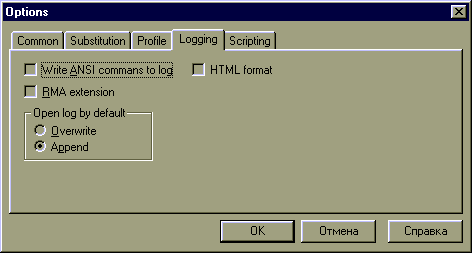

This page allows the user to set up options regarding the logging of incoming text/user input. This means you can save all the strings and text coming from the MUD, as well as your input, to a file. You can turn logging on/off via the #log command. This page allows the user to configure the default options for the logging.
Probably the most important option is the default mode to be used when opening the log file. If the default mode is Append, and you start logging to a file, the new text will simply be added to the end of the file. If it doesnt exist, it is created. If the default mode is Overwrite, the existing file will be cleared and the new information will overwrite the old file. You can also set up the logging mode by using the second parameter of the #log commnd.
The two other options avaiable focus on saving extra (special) data to the log file. The "Write ANSI commands" option tells the client to write the ANSI escape sequences to the file. This effectively saves the color codes that are received. The "RMA extension" option tells JMC to add special ESC commands before the text is written to the logfile. This command set up a delay time before text arrives. RMA uses it to play back logs in real-time.
See also: Common params Substitution page Profile page #log